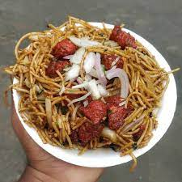

Gobi Gobi Noodles

Gobi Manchurian is a popular Indo-Chinese dish where crispy cauliflower florets are tossed in a manchurian sauce. ... Popular Indo-Chinese Dish, Gobi Manchurian has crispy cauliflower florets tossed in a spicy, sweet and tangy manchurian sauce. Tastes great with hakka noodles or fried rice!
Description
- Gobi
- Tomato
- Onion
- Spicies
- Coriandor Leaves
- Cooked noodels
- First fry sliced tomatos and Onions on a pan
\
- Then add gobi to it
- Add cooked noodels and spices with gobi pieces , to it
- Cook well and your gobi noodels is ready